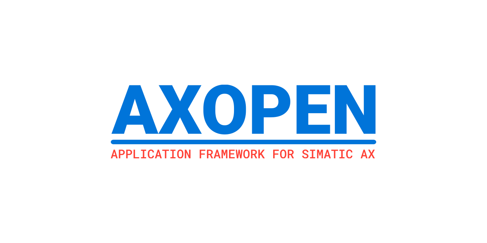

AXOpen is an open-source application framework project developed by a group of automation engineers. It is based on SIMATIC AX platfrom and AX# technology
Source repositories
Note
This project is under development. We periodically release versions that can be used for testing and in non-production environments.
Disclaimer
Important
It is necessary to have a valid license for SIMATIC AX in order to use AX# and AXOpen!
SIMATIC AX is currently in a limited sales release in selected European countries only. You will need to request access from the AX team which will check if your use case is suitable for the current state of the product. The first step to getting the approval is contacting your local SIEMENS sales representative or writing an email to simatic-ax@siemens.com.